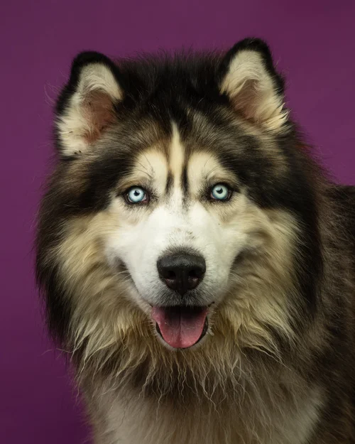
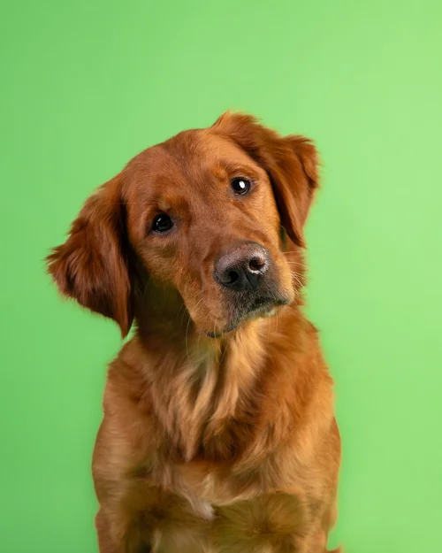
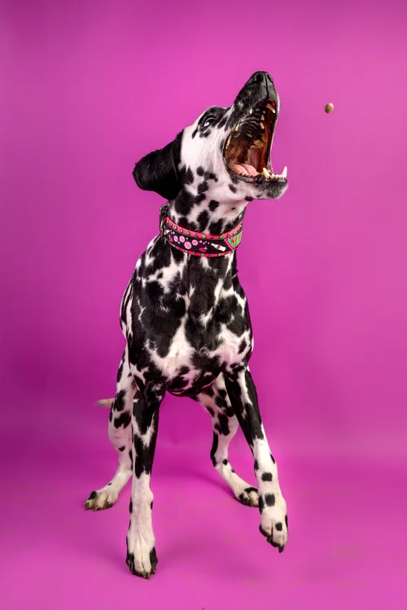

¿Quienes somos?
"Somos un grupo de apasionados por la vida animal que decidió dejar de ser espectador para convertirse en actor del cambio. En Patitas Felices, cada rescate es un compromiso de por vida."

Somos el puente entre un pasado difícil y un futuro lleno de amor. Cada colita moviéndose es una vida transformada.
Mascotas buscando hogar
Familias unidas este año
Peluditos rescatados






"Somos un grupo de apasionados por la vida animal que decidió dejar de ser espectador para convertirse en actor del cambio. En Patitas Felices, cada rescate es un compromiso de por vida."

Rescate Inmediato

Sanamos con amor

Hogares para siempre

Conciencia ciudadana
"Nuestros sueños tienen huellas"

Cero Abandono

Educacion Vital

Red de Esperanza

Huella de Cambio
"Momentos que marcan la diferencia y eventos para unirnos."

Fecha:25 de Abril - Parque Central.
Descripción:Recolectaremos alimento, cobijas y medicinas
para nuestros nuevos rescatados.
¡Te esperamos!

Fecha:25 de Abril - Parque Central.
Descripción:Recolectaremos alimento, cobijas y medicinas
para nuestros nuevos rescatados.
¡Te esperamos!

Fecha:25 de Abril - Parque Central.
Descripción:Recolectaremos alimento, cobijas y medicinas
para nuestros nuevos rescatados.
¡Te esperamos!
Cada uno tiene una historia, solo les falta un hogar para empezar un nuevo capítulo.


"Mucha gente busca cachorros, pero yo decidí darle una oportunidad a un perro adulto. Toby es la
calma de mi casa, es súper agradecido y educado. ¡Gracias Patitas Felices!"
⭐⭐⭐⭐⭐

"Adoptar a Simba fue la mejor decisión. El proceso fue súper claro y el equipo de la fundación me dio
todos los tips para que se adaptara rápido a mi apartamento. ¡Ahora somos inseparables!"
⭐⭐⭐⭐⭐

"Buscábamos una gatita que fuera paciente con nuestros hijos y Luna fue el 'match' perfecto. Ver a
los niños aprender sobre responsabilidad y amor animal no tiene precio."
⭐⭐⭐⭐⭐
"Déjanos tus datos y nos pondremos en contacto contigo pronto. ¡Cada mensaje es un paso más hacia un final feliz!"